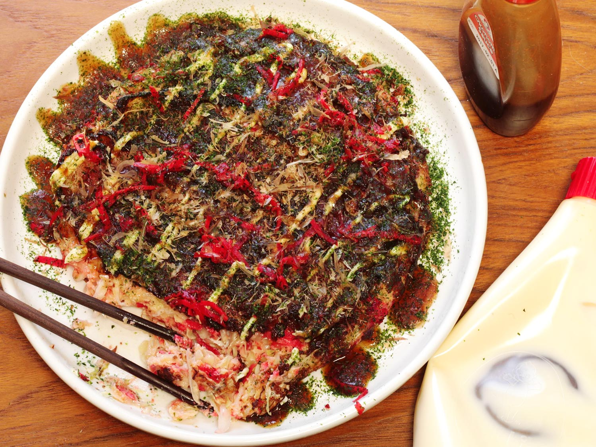
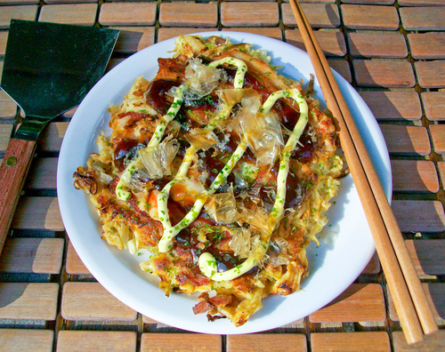
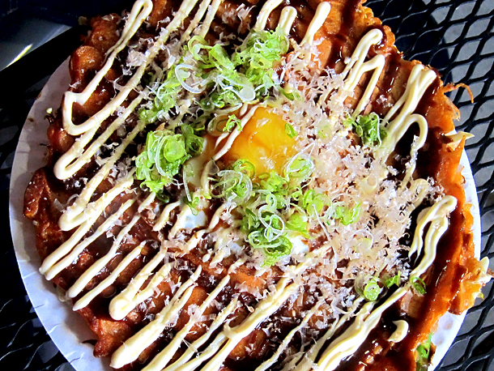

Okonomiyaki
Okonomiyaki je japonská palacinka plnená rôznymi ingredienciami. Jej názov znamená "Čo máš rád grilované". Aj keď je toto jedlo spojované s oblasťami v okolí Hiroshimi alebo Kansai, je rozšírená po celom Japonsku. Ako pri väčšine japonských jedál sa aj tu vyberá poleva na základe regiónu kde sa pečie.

Pôvod
Palacinky boli vynájdené už v 16-tom storočí, avšaknajväčší rozmah zaznamenali počas obdobia 2 svetovej vojny, kedy bol v Japonsku nedostatok ryže, a tak škrobové polacinky boli skvelou náhradou. Palacinky mali vysoký obsah vitamínov, neboli veľmi drahé a boli zvyčajne podávané malým deťom

Kansai (Osaka) Okonomiyaki
Okonomiyaki sú viac brané ako hlavné jedlo ako inde v Japonsku. Cesto je tvorené z múky, vody, strúhaných sladkých zemiakov, vajíčok a kapusty. Môže sa občas pridávať aj zelená cibuľka, držky, chobotnica, sépia, kreveta, zelenina, rastlina konjac alebo syr. Niekedy je taktiéž prirovnávané k omelete alebo palacinke ba aj k japonskej pizzi. Niektoré japonské reštaurácie ponúkajú možnosť kde zákazníci dostanú misu s jedlom, ktoré si sami ńa grile ugrilujú alebo im ho ugrilujú servírky v danej reštaurácií.V Osake, odkial Okonomiyaki pochádza sa pripravuje podobne ako palacinka. Sú vyprážané na panvici, odkiaľ sa neskôr vyrežú a sú podávané s otafuku omáčkou, kúskami morskej riasy, japonskou majonézou a zázvorom, ktoré sa nachádzajú na vrchu Okonomiyaki.

Hiroshima Okonomiyaki
V Hiroshime sú ingrediencie naskladané na seba narozdiel od ích mixovania v Osake. Podlažia sú zvyčajne kapusta, bravčové mäso a rôzne iné ako napríklad sépia, chobotnica alebo syr. Taktiež sa zvyknú dávať aj Udon spolu s vajíčkom. Pomer množstva kapusty je v tomto prípade až 4-násobný oproti tomu v Osake. Ingrediencie a taktiež ich množstvo záleží z väčšiny na chuti šéfkuchára alebo výberu zákazníka.
